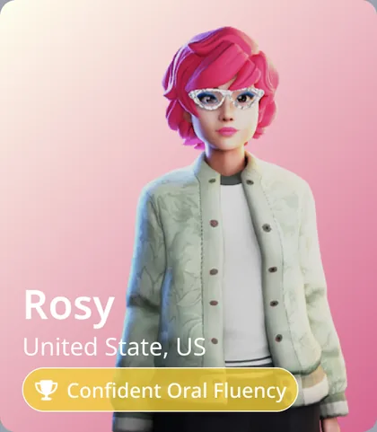
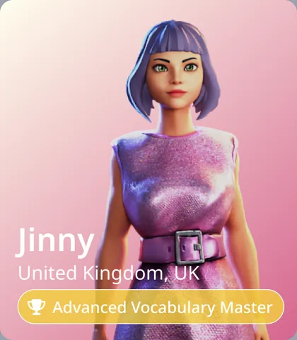
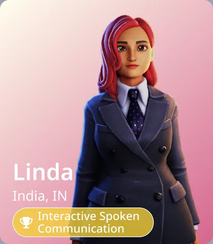
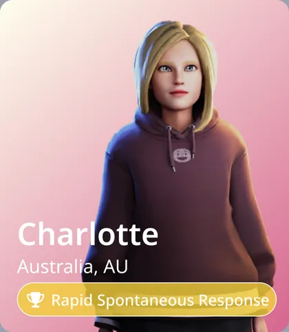
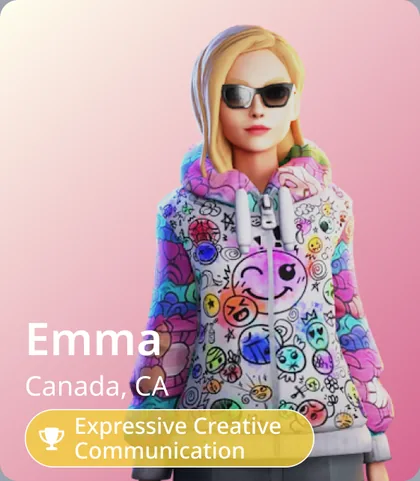
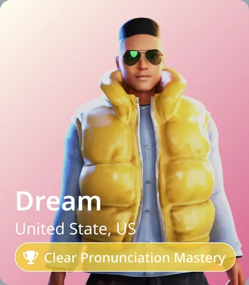

The current design
Four surfaces, one learning loop
The “Current Design” section of the Figma file covers four connected features. Each one hands the learner to the next, and an AI partner stays present throughout.
-
01
Dashboard
The home surface. Progress, streak and a Continue Learning row that links straight into the three practice modes.
-
02
AI partner
Creating a course opens a three-step form. Step one is picking a partner — a named character with a region, a specialism and a personality profile.
-
03
Courses & self-paced
Generated courses live in My Courses; eight skill areas in Self-Paced Learning generate practice sets on demand.
-
04
SpeakUp
Scenario-based speaking practice with an AI partner, scored turn by turn and summarised at the end.
How the screens connect
- Dashboard → practice. The three Continue Learning cards map one-to-one onto My Courses, Self-Paced Learning and Real-Life Speaking Practice.
- Form → course. The + button in My Courses and Create a New Scenario in SpeakUp open the same three-step modal shell: Your Information → Analysis Result → Complete.
- Partner → everywhere. The partner keeps a slot on every surface — a full assistant panel on the dashboard, a sidebar card in the learning screens, and the on-screen partner inside a SpeakUp session. Which character fills that slot varies between frames in the file.
- Session → score. A finished SpeakUp scenario resolves into a radar summary, and the SpeakUp overview charts sessions over time.
01 — Dashboard · node 383:2217
A learning dashboard that answers “where was I?”
One 1440 × 1024 screen carries five jobs: identify the learner and their level, show momentum, show progress by skill, offer a way back into unfinished work, and keep the AI assistant within reach.
-
01
Daily Progress and LearnTrack
Two panels share the row. Daily Progress plots a week of activity against the learner’s starting level — the pill reads “Your Initial level: A1”. LearnTrack turns the same week into a motivation ring, a completed-courses ring, and a Skill Boost Tracker radial covering Grammar, Vocabulary, Writing, Speaking, Reading and Listening. Tabs above it switch the tracker between LearnTrack, PTS and IELTS.
Effort and skill balance are legible in a single glance, without opening a report.
-
02
Day Streak
A single card counts consecutive days and lays the current week out as seven chips: days already completed carry a check, the rest show their date. A month pill (“May 2025”) anchors the streak to a calendar, and a flame motif sits behind the count.
Turns a large goal into one visible, daily commitment — and makes breaking it feel costly.
-
03
Continue Learning
Three resume cards, one per practice mode. The My Courses and Self-Paced Learning cards each name the item, its topic or skill tag, the lessons completed and a percentage bar, and end in a Resume course button. The third card — Real-Life Speaking Practice — swaps that pattern for a filled pink panel with the scenario number, the role, a microphone and a Let’s Speak button.
The dashboard’s main job is re-entry: three taps back into whatever was left unfinished.
-
04
EnglishX Learning Assistant
A full-height panel pins the AI partner to the right of the dashboard: name, a gold specialism badge, gender and MBTI chips, a region, and five personality meters — Friendliness, Enthusiasm, Formality, Playfulness, Empathy. The character is rendered below at full height, with a greeting bubble and an “Ask AI Anythink…” field plus a Send button at the base.
Help keeps a face and a personality, and never costs a navigation step.
02 — Create new course · nodes 419:4578, 423:5239, 423:5444
Choosing an AI learning partner
A new course begins in the Personalized Learning Path Generation Form — a modal with three stages across the top: Your Information, Analysis Result, Complete. The first thing the form asks for is not a level or a topic. It asks who the learner wants to practise with.
Three states drawn in Figma. Switching here shows the designed frames — it is a demo of the design, not a working product.
The partners drawn in this section
-

-

-

-

-

-

Names, regions and specialisms are taken from the cards in node 419:4578. Of these, only Dream has a detail state drawn in the Current Design section — the profile panel above shows Male, ENFJ, United State, US and five personality meters.
03 — My Courses · Self-Paced Learning · nodes 416:3662, 427:5501
Personalised on one side, self-paced on the other
Two screens share a shell — the same sidebar, the same greeting bar, the same Course content grid — and differ in how work arrives. One delivers a generated course with a fixed order. The other lets the learner pick a skill and generate a set on the spot.
Course organisation
- A single vertical rail holds every enrolled course. Each row carries the cover art, the full title, a days-remaining counter and a percentage bar.
- The active course is filled pink and white-on-pink; the rest stay outlined. Position in the list is the only navigation needed.
- A “+” button beside the heading opens the generation form — the same modal shell used to pick an AI partner.
Lesson content
- Course detail repeats the title, shows the generated cover illustration, and sets out the objective as one continuous paragraph — vocabulary, message construction, etiquette, discussion, presentation.
- Course content sits underneath as a two-column grid of cards. The AI assistant docks in the lower right as a collapsible chat.
In the file, the cards under Course content are empty placeholders — the lesson card itself has not been designed in this section.
Eight ways in
- A 4 × 2 grid of skill tiles replaces the course rail: Listening, Reading, Writing, Speaking, Vocabulary, Grammar, Thai Problematic and Integrated Skills.
- “Thai Problematic” names the audience outright — the tile set is built for Thai speakers learning English, not for a generic learner.
- Tiles are equal in weight: same size, same white card, same pink hairline. Nothing is recommended, so nothing is ranked.
Practice on demand
- “Generate a New Practice Set” is the one primary action on the screen, aligned right of the Course content heading.
- The same content grid returns below it, so a generated set and a course lesson are meant to read as the same kind of object.
- The assistant card stays in the sidebar, keeping the chosen partner present while the learner works alone.
As on My Courses, the content cards in this frame are placeholders.
04 — SpeakUp · section 848:5491
SpeakUp: rehearsing the conversation before it happens
The largest sub-section of the file. SpeakUp takes the learner from a measured overview, through building a scenario, into a timed spoken exchange with the AI partner, and out again with a score. It is the only place in the Current Design where the learner speaks.
Inside a session
Five states are drawn for a single scenario — “Introduce Yourself Over Coffee at Singapore Tower”. Scroll through them, or jump straight to one.
-
01
The briefing, and two ways to run it
Before a word is spoken, a modal sets the situation: who the learner is, who they are meeting, where, at what level, and for how many turns. It closes with a choice of two buttons — Confidence Mode and Coaching Mode. The annotated variant of this frame spells out the difference: Confidence Mode hides the on-screen text, Coaching Mode shows it.
-
02
The partner speaks
The partner is rendered full height inside the location, not cropped into a chat avatar. Their line arrives as a large filled bubble; the learner’s camera sits in the lower-right corner. A ring in the top bar counts the turns left, a Focus toggle controls how much of the exchange is on screen, and Full screen mode removes the app around it.
A control bar keeps the session’s verbs in one place: Scenario, AI Display, Camera, Speak, Pause, Show Analysis, Hint.
-
03
The learner answers — and is scored live
The reply appears as a light bubble anchored to the learner’s camera tile, and the previous AI line shrinks back to make room. Two panels drop into the top of the scene: a Speaking Score block breaking the turn into Sentence, Complexity and Context out of ten with a rating stamp, and a Real-Time Feedback panel written in the learner’s first language.
Feedback lands on the turn just spoken, in the language the learner thinks in — not at the end of the session in English.
-
04
Zooming out to the whole exchange
Flipping the header toggle from Focus to All turns collapses the oversized bubbles into a scrollable transcript with small avatars on both sides — the same conversation at reading density instead of speaking density. The AI Display control opens a menu of camera framings: Full, Mid, Upper, Head.
One session supports two needs: performing in the moment, and reviewing what was said.
-
05
Closing the session
The turn ring reaches zero, fireworks break over the scene, and the session resolves into two halves: a written summary of what the learner did, and a five-axis radar — Context Suitability, Goal Progress, Fluency & Coherence, Vocabulary Usage, Grammar Accuracy. Three exits sit underneath: Practice Again, Go to SpeakUp, Next Scenario.
The ending is a decision, not a dead end — repeat, review the overview, or unlock the next rung of the ladder.
In summary
What holds the current design together
-
One palette, four surfaces
A rose primary (#D53951) with a softer pink (#D76991), pale pink surfaces (#FFF3F4) and lavender and teal accents. Nothing in the Current Design steps outside it.
-
A fixed desktop shell
Every screen is 1440 × 1024 with the same persistent sidebar, level badge, greeting bar and right-hand assistant, so only the working area changes between features.
-
Modals carry the set-up work
Creating a course and creating a scenario share one three-step form shell. The heaviest input happens in an overlay; the underlying screen never reshuffles.
-
Practice is always framed by feedback
A ring, a bar, a score block or a radar sits beside whatever the learner just did — on the dashboard, mid-turn in SpeakUp, and at the end of a session.
-
The AI partner is a character, not a chatbot
Name, region, specialism, MBTI and five personality meters are defined in the picker, and the same profile fields reappear on the dashboard and inside sessions.
-
Localised where it counts
The interface is in English; the character bio and the in-session Real-Time Feedback are written in Thai — support in the learner’s first language, practice in the target one.
Scope of this page
This page documents the interface as drawn in the “Current Design” section of the EnglishX Figma file (node 386:2717). Earlier explorations elsewhere on the canvas are deliberately excluded. It does not report user research, testing, adoption or business outcomes, and it does not describe anyone’s role on the project, because the source file does not contain that information. Numbers inside the screens are sample UI data.